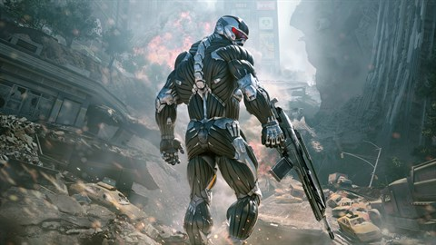
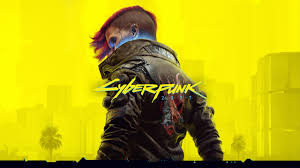

Top 5 Jogos Secos
Sabe aqueles jogos que você já tentou rodar na sua lata sequinha e parecia que ela ia explodir? bom aqui estão alguns jogos sequinhos que rodam na sua máquina com toda a certeza e como você pode configurar
Aqui vai a lista de jogos sequinhos
Crysis

Crysisseco
roda crysis? eu atesto que roda sim. vou explicar e resumir oque é crysis pra quem não sabe
Crysis é um jogo de tiro em primeira pessoa lançado pela Crytek, ambientado em uma ilha onde um conflito militar evolui para algo muito maior envolvendo tecnologia alienígena. Você controla um soldado equipado com um nanosuit, um traje avançado que permite aumentar força, velocidade, resistência e camuflagem. A proposta do jogo sempre foi dar liberdade total: você pode abordar situações de forma furtiva, agressiva ou estratégica, usando o ambiente a seu favor.
o Crysis ficou famoso porque, na época, parecia simplesmente impossível de rodar. Ele virou praticamente um teste de poder bruto de PC, com gráficos absurdos para o período. Só que o ponto é que o jogo não é “mal otimizado” como muita gente pensa — ele só foi feito muito à frente do tempo.
O jogo escala bem se você reduzir qualidade gráfica, resolução e efeitos pesados como sombras e física. Em configs no “low” ou até com tweaks manuais nos arquivos, ele roda em máquinas bem fracas porque o motor (CryEngine) permite desligar muita coisa pesada. Ou seja, aquele meme de “roda Crysis?” virou mais fama do que regra absoluta — com as configurações certas, até um PC humilde encara.
Crysis é metade jogo, metade benchmark histórico — e com um pouco de paciência nas configurações, ele deixa de ser monstro e vira jogável até em setups bem simples
Crimson Desert

Deserto Carmesin
Crimson Desert é aquele tipo de jogo que, só de bater o olho, já passa a sensação de “isso aqui vai pesar”. Desenvolvido pela Pearl Abyss, ele aposta forte em realismo visual, física no combate e um mundo aberto vivo, com clima dinâmico e interações bem detalhadas.
A história gira em torno de Macduff, um mercenário num continente caótico, cheio de guerras e criaturas. Mas sendo bem direto: o que chama atenção mesmo não é só a narrativa — é o impacto visual e o combate. Tem peso nos golpes, movimentação mais crua, e uma sensação de que tudo no jogo responde de forma mais “física” do que arcade.
Aqui exige um pouco mais de conversa com a lata, por exemplo você até pode rodar em hardware nutela e pode tentar otimizar o máximo para hardwares mais raiz com as configurações padrão do jogo. porém você pode deixar o jogo uma farinha com o fsr padrão e roda de forma CINEMATOGRÁFICA
Outra situação é você conversar com a máquina como fazer um overclock básico ou colocar o patinho para rodar mas o lag de entradas fica seco nesses casos
caso você seja raiz o suficiente você pode aliar patinho e overclock na lata pra rodar liso! liso! liso! a 30 fps. ninguém quando jogava no ps2 ao 4 reclamava de fps né. Desliga o contador e joga filho
Cyberpunk 2077

CyberpunkSeco
Cyberpunk 2077 é um RPG de ação em mundo aberto da CD Projekt, ambientado em Night City — uma cidade futurista cheia de tecnologia, crime e histórias pesadas. Você controla o V, um mercenário tentando sobreviver nesse caos, com implantes cibernéticos, escolhas narrativas e várias formas de abordar as missões.
Bom, Depende apenas de você e sua força de vontade rodar o jogo como por padrão você tem algumas opções de optmização e caso você deseje pode usar o patinho e o fsr como já falei que deixa o jogo uma farinha
Jogo cinematográfico numa gtx 1030 com overclock na lata e patinho também
Bom não há muito oque falar sobre. simplismente seco
Red Dead Redemption 2
RedDead
Cinematográfico
É um jogo mais lento, focado em narrativa e imersão. Você vive o Arthur Morgan no meio do fim do velho oeste, com um mundo extremamente detalhado: clima, animais, NPCs com rotina… tudo muito vivo.
Você ainda consegue diminuir a resolução e as configurações padrão para o minímo mas ainda fica bonitinho demais.
Sendo muito raiz você pode usar o patinho para reescalonar e também pode tentar deixar os os gráficos de ps1 que fica bem mais levezinho
Grand Theft Auto 5
GTAV
Mais antigo, mais otimizado e muito mais flexível. Los Santos é grande, cheio de coisa, mas o jogo foi muito bem adaptado pra rodar em praticamente qualquer coisa.
Você consegue diminuir bem os gráficos e até mesmo pegar uma versão debloat na internetkkkk
Óbvio que diminuir a resolução e reescalonar sempre é uma boa opção caso você tenha um pc lascado